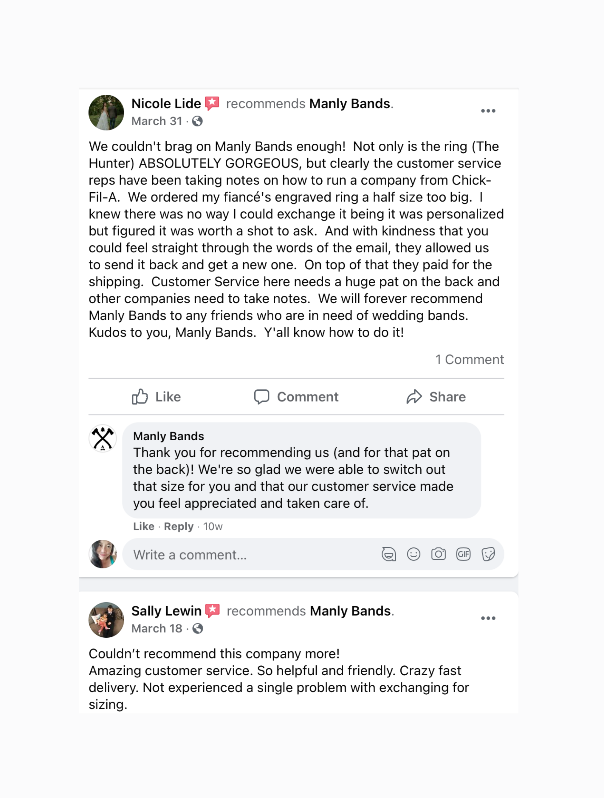

Whether building a customer support team within your organization or restructuring a department, it’s important to establish firm foundations of proven principles. Customer support has become a determining factor in customer satisfaction, which leads to higher ratings and reviews that fuel future growth.
Building a customer support team requires a solid structure to set them up for success. Over the years, Influx has built customer support teams for over 300 companies in the US, Australia, and Europe. These high-functioning teams have cleared massive ticket backlogs of 11,000+ tickets within a month of getting onboarded or helped raise CSAT scores in just 30 days.
Wondering how to build a customer support team? While there isn’t a one-size-fits-all formula for creating a good customer support team, in this article we discuss six customer support tips for creating a sound structure.
1. Set standards for excellent customer service
How do you define excellent customer service in your organization, based on your company culture and values? Every company has its unique standards for customer service. For example, some companies emphasize timely replies while others value customer satisfaction.
For example, let’s look at Manly Bands. The brand aims to resolve customer issues with one-touch resolutions and thoughtful support. The company values are built on helping couples enjoy the process of buying men’s wedding rings online.

Unsolicited praise is the highest form of customer satisfaction. Manly Bands enjoys this regularly as a sign of its high customer service standards.
Standards to set when building a customer support team can include:
- Have a clearly defined set of measurable KPIs for your support team.
- Define ‘resolution’ for customer interactions and when a ticket is closed.
- If you’re aiming to exceed expectations on response times, put solutions in place such as adding team members, increasing coverage hours, outsourcing customer support, or setting automation tools.
- Ensure that responses carry your company’s brand voice.
- Encourage a healthy feedback loop amongst the team that empowers and motivates them to deliver their best to customers.
2. Set up the right customer support channels
The most important thing when you’re building a customer support team is creating the right communication channels for customers to reach you quickly when they need you most. Nothing frustrates customers more when they have to figure out where the “contact us” or “help center” button is on your website.
Aim for your customers to connect with your support team as easily as possible on the various channels that work best for delivering high-quality service and support. Every channel has its pros and cons. For instance, email works best in providing attachments, and long descriptions and explanations, but requires waiting times for customers. Live chat remains a hugely popular channel because it resolves matters instantly without interrupting customers online. Voice support might provide instant support, but it costs more time and money.
Pros and cons of customer support channels
| Channel | Pros | Cons |
|
| |
| Live Chat |
|
|
| Voice Support |
|
|
###
3. Hire the right people, especially support leaders
Your customer support team can only go as high as the standards demonstrated by your leadership team. Investing in sound leadership is crucial in building an effective customer support team. A strong leader would be a powerful motivator for team members to aspire towards becoming like them.
“Go top-down, not bottom-up,” advises Influx co-founder Michael de Wildt.
“If you’re going to build a team with more than ten members, get a good, competent manager-type first. Don’t skimp. They will be over-skilled as an individual player to start, and you’ll think you’re paying too much for their contribution role, but their experience will pay back in dividends once they build a team.
“Give frequent feedback early, both positive and negative. Don’t be afraid to criticize. Show radical candor: Care personally, but challenge directly. This is especially important with your first hire. Letting standards slip with your first hire will be particularly cancerous to your organization.”
Key questions to ask when hiring support teams
When building a customer support team, hiring the right people makes all the difference between providing mediocre service or delivering outstanding customer support experiences. So, how to scale your customer support team? Below, you can find a list of helpful questions to consider when assessing customer support candidates during the recruitment process:
- What qualities of a customer support agent can deliver the standards you have defined for your company?
- Do they have a mindset of helping people?
- Do they have a blend of empathy, emotional intelligence, and critical thinking skills to resolve an issue, especially when they might have to deal with angry or frustrated customers?
- What skills do you need to equip your support team? For instance, specific technical skills and at what level of competence?
- Are you providing training to ensure that your support team meets your company’s needs in delivering the proper support for customers?
- What is your onboarding plan for new agents? You’d need a program to teach the company culture, service standards, product or service knowledge, and technical training.
- What skills and career paths can they expect to succeed and advance in their lives to keep the team motivated?
4. Measure your data and tracking
The customer service software your support team uses can generate critical reports on tickets and resolved cases. But knowing what to look out for and why can be significant. So, here are some key questions to ask when examining data churned out by your support team:
- Are the support tickets answered and resolved promptly according to standards?
- Where do most of the support requests come from, and why?
- Are there enough support team members to resolve issues?
- Where does this data go to rectify or resolve repeat issues?
- What is the desired outcome of this data? For instance, the engineering or product development teams would need to know if bugs or glitches keep occurring. If agents are not meeting response times, then you’d need to focus on the ticket volumes handled per agent and raise the need for more support.
Different metrics can help your organization achieve various goals such as CSAT or NPS.
5. Equip your team with the right tools
Every master craftsman knows that tools of the trade are critical in getting a job done right. When building a customer support team, selecting efficient, functional software for agents to engage daily with customers makes a lot of difference. It’s pointless building a support team with the right attitude, mindset, and training but having them use inefficient tools.
Customer service software may include internal tools to create seamless workflows and a helpdesk as the primary platform for all customer conversations. The right helpdesk should include past conversation threads and customer information to help an agent get a quick overview before the conversation starts.
Some key questions to ask when selecting the right helpdesk when building your customer support team would include:
- What are the communication channels you need for your team?
- Can your helpdesk accommodate the size of the team now and scale for future growth?
- What are the key functionalities that you need?
- Do you need to connect with other tools such as a CRM platform or other channels where customers reach you?
- Do you need to integrate with other apps?
- What are the crucial automation tools you need, especially during peak seasons?
- What reporting tools do you need?
6. Build a knowledge base
Investing in a knowledge base from the start can pay enormous dividends to both your agents and customers. A constantly evolving and updated knowledge base makes it easy to find answers and information quickly. As customers are continually churning out new concerns and queries, you can have a frequent stream of feedback, beneficial for product development. So, start documenting early. An excellent knowledge base also serves as marketing material, as potential customers can discover and understand your product or service.
What makes a good customer service team?
Wondering how to build a customer service team? A strong structure and smooth workflow with the right tools and empowerment will help the team to perform at its best. Customer support also needs a place at the management table or strategy meetings where critical feedback can be shared and resolved.
A prime example we can share is Influx client Sendle, which is one of Australia’s fastest growing companies that has engaged Influx to provide a layer of support while it was building its own customer support team.
The company’s goal has always been to proactively resolve customer issues by building a system that automatically raises alerts and fixes problems before customers raise it.
Why is it important to have a good customer service team?
Building a customer support team is truly all about what you wish to deliver to your customers when they reach out to you and how you’d like to achieve desired outcomes. Providing excellent customer support is a key aspect of the customer experience.
Building a customer support team that thrives on trust and support helps achieve customer support goals. After all, customer support represents the voice of the customer. Building a support team makes or breaks an organization.
Explore options for growing and developing your customer support team
Building and managing an excellent customer support team requires time and planning. Influx works as an added layer of support for your existing team with experienced agents trained in your brand voice. Learn how Influx can help build high-performance customer support teams operating globally, 24/7.